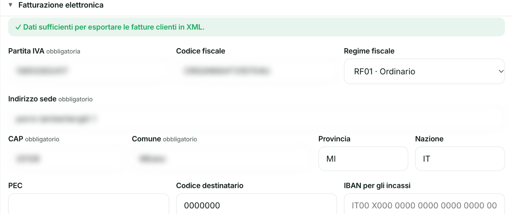

- Home
- Funzionalità
- Ricezione automatica delle fatture
Le fatture dei fornitori arrivano da sole in Aedify.
All'attivazione deleghi ad Aedify il codice destinatario per le tue fatture elettroniche. Da quel momento in avanti le fatture di acquisto arrivano direttamente in Aedify tramite il Sistema di Interscambio, già archiviate e pronte per la contabilità.
- Fatture di acquisto ricevute in automatico dal Sistema di Interscambio
- Archiviazione automatica, pronta per la contabilità
- Nessuna PEC da controllare, nessun download manuale
- Attiva sulle fatture emesse dopo la delega

Le fatture le raccogli tu, una fonte alla volta
Fatture recuperate a mano da PEC e portali
Ogni fattura di acquisto va scaricata dalla PEC o dai portali dei fornitori e poi caricata nel gestionale: tempo perso ogni mese.
Una fattura dimenticata è un problema per il commercialista
Se una fattura non viene registrata in tempo, rischi di scoprirlo solo in fase di dichiarazione.
Fatture sparse tra email, PEC e portali
Ricostruire l'elenco completo delle fatture del mese richiede di incrociare più fonti diverse.
Come funziona nel dettaglio
Deleghi il codice destinatario
All'attivazione indichi Aedify come destinatario delle tue fatture elettroniche, tramite un intermediario accreditato al Sistema di Interscambio.
Le fatture arrivano da sole
Da quel momento in avanti le fatture emesse dai fornitori arrivano direttamente in Aedify, senza PEC né download.
Tutto è pronto per la contabilità
Le fatture ricevute vengono archiviate e collegate alla contabilità, pronte per essere consultate o esportate.
Dalla delega all'archivio, senza mai aprire la PEC.
Nove passaggi, dalla configurazione iniziale a quando la fattura è pronta per il cantiere: tutto quello che Aedify fa, uno per uno.
Deleghi il codice destinatario
Nelle Impostazioni, sezione Fatturazione elettronica, inserisci il tuo codice destinatario (7 cifre): è lo stesso dato che magari oggi lasci al commercialista o a un altro software. Da quel momento è quello il recapito dove i fornitori indirizzano le fatture, al posto della PEC.
Un intermediario accreditato SDI fa da tramite
Aedify dialoga con il Sistema di Interscambio tramite un intermediario accreditato dall'Agenzia delle Entrate: tecnicamente è lui a scambiare i file XML con lo SDI per conto tuo. Tu non configuri nient'altro oltre al codice destinatario, né devi occuparti della parte tecnica.
Vale da quando l'attivi, non retroattivamente
La delega copre le fatture emesse dopo l'attivazione. Quelle precedenti restano dove sono oggi (email, PEC, portale del fornitore): non vengono recuperate automaticamente, vanno ancora caricate come hai sempre fatto.
Le fatture arrivano da sole nella Contabilità
Ogni fattura elettronica che un fornitore emette verso la tua partita IVA passa dallo SDI e arriva dentro Aedify nel formato XML originale, già nella sezione Acquisti della Contabilità. Non la carichi tu: compare da sola, con tutti i dati del documento.
I dati si leggono da soli dal file
Fornitore, importo, aliquota IVA e scadenza di pagamento vengono letti automaticamente dal file XML, non ricopiati a mano: niente trascrizione, niente errori di battitura su un numero decisivo per la liquidazione IVA.
Niente più PEC o portali da controllare
Non apri più la PEC, non entri nel cassetto fiscale dell'Agenzia delle Entrate e non scarichi da un portale fornitore uno per uno: se una fattura arriva mentre sei in cantiere, la trovi comunque dentro Aedify quando torni in ufficio.
Resta archiviata nello storico documentale
Ogni fattura ricevuta resta archiviata nello storico documentale, filtrabile per fornitore o per periodo: numero, data, controparte e importo del documento, con il file originale sempre un clic di distanza. Utile in caso di verifica, o se un fornitore contesta un pagamento a distanza di mesi.
Entra già pronta per il cantiere giusto
La fattura è già strutturata in righe, imponibile e IVA: tu scegli solo il cantiere e la categoria di costo (materiale, manodopera, noleggio...) a cui abbinarla, senza ridigitare un solo numero.
Resta segnalata finché non la sistemi
Finché non è abbinata a un cantiere, la fattura resta marcata come "da sistemare": non entra nel consuntivo e la sua spesa non pesa sul margine di nessuna commessa, così non la perdi di vista per sbaglio.
Le domande più frequenti.
Cosa succede alle fatture ricevute prima di attivare la delega?
Restano dove sono oggi: email, PEC o portale del fornitore. La delega vale da quando la attivi in avanti, non recupera le fatture passate.
Devo avvisare i miei fornitori del cambiamento?
No. I fornitori continuano a fatturarti sulla tua partita IVA come sempre: cambia solo dove arriva il documento, non come loro lo emettono.
Questa funzionalità riguarda anche le fatture che emetto ai miei clienti?
No, solo quelle di acquisto in arrivo dai fornitori. Le fatture che emetti tu si gestiscono nel ciclo attivo della Contabilità, non qui.
Posso disattivare la delega se cambio idea?
Sì, in qualsiasi momento dalle Impostazioni. Da quel momento le fatture tornano a raggiungerti come facevi prima dell'attivazione.
Chi gestisce tecnicamente il collegamento con il Sistema di Interscambio?
Un intermediario accreditato dall'Agenzia delle Entrate: è lui a dialogare con lo SDI per conto tuo. Tu configuri solo il codice destinatario, nient'altro.
Una fattura ricevuta entra subito nel consuntivo del cantiere?
No: arriva già strutturata e archiviata, ma finché non scegli tu il cantiere e la categoria di costo resta segnalata come "da sistemare" e non pesa sul margine della commessa.
Vuoi vedere Ricezione automatica delle fatture in azione?
In 15 minuti ti mostriamo Aedify sul tuo caso concreto. Gratis, senza impegno.
- Gratis, senza impegno
- Solo 15 minuti
- Sul tuo caso concreto